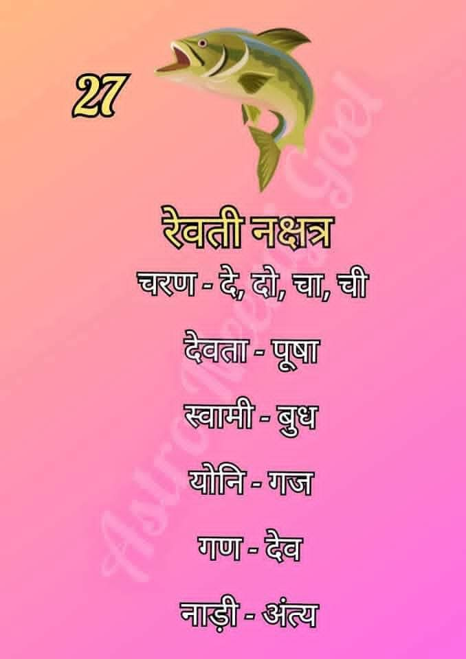

रेवती नक्षत्र (Revati Nakshatra)
रेवती नक्षत्र आकाश मंडल का सत्ताईसवां और अंतिम नक्षत्र है। यह विकास, संरक्षण और पूर्णता का प्रतीक है। इसके अधिष्ठाता देव 'पूषन' हैं, जो यात्रियों के रक्षक माने जाते हैं।

सामान्य स्वभाव:
रेवती नक्षत्र में जन्मे जातक अत्यंत कोमल, दयालु और कल्पनाशील होते हैं। इनमें एक स्वाभाविक आकर्षण होता है और ये दूसरों के प्रति बहुत सहानुभूति रखते हैं। ये जीवन में सकारात्मकता फैलाने में विश्वास रखते हैं।
रेवती नक्षत्र की मुख्य विशेषताएँ
- दयालु हृदय: ये दूसरों की पीड़ा को महसूस करते हैं और हर संभव सहायता करते हैं।
- रचनात्मकता: इनकी कल्पना शक्ति बहुत तेज होती है, जो इन्हें कला और लेखन में सफल बनाती है।
- आध्यात्मिक प्रवृत्ति: ये ईश्वर में गहरी आस्था रखते हैं और धर्म-कर्म के कार्यों में रुचि लेते हैं।
- मिलनसार: ये बहुत ही सामाजिक और मित्रतापूर्ण स्वभाव के होते हैं।
- रक्षक: ये अपने प्रियजनों की सुरक्षा और देखभाल के लिए हमेशा तत्पर रहते हैं।
शिक्षा एवं करियर
रेवती नक्षत्र के जातक अपनी कलात्मक और सेवाभावी प्रकृति के कारण निम्नलिखित क्षेत्रों में बहुत सफल होते हैं:
- कला, संगीत और अभिनय (Arts & Acting)
- पशु चिकित्सा और प्राणी संरक्षण (Veterinary & Animal Care)
- यात्रा एवं पर्यटन (Travel & Tourism)
- साहित्य और काव्य (Literature & Poetry)
- आध्यात्मिक और धार्मिक परामर्श (Spiritual Counseling)